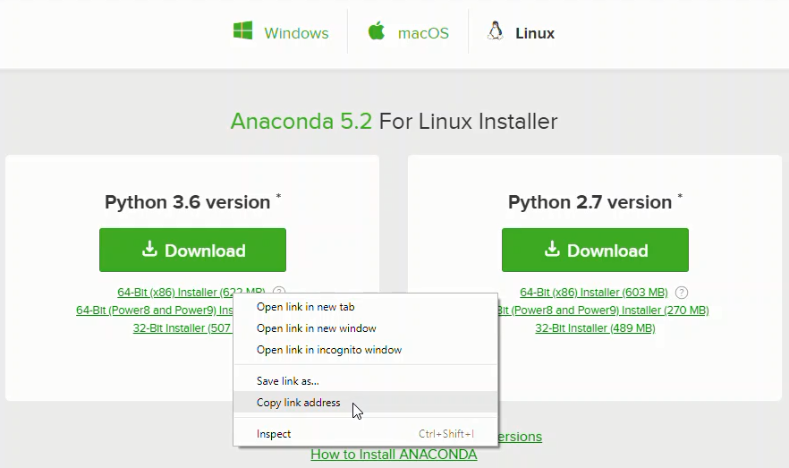

Installing Anaconda on Linux¶
In this section, we will run through installing the Anaconda distribution of Python on Linux, specifically Ubuntu 16.04. Ubuntu 16.04 comes pre-installed with Python (Version 3.3) and legacy Python (Version 2.7). You can confirm this legacy version of Python is installed by opening up a terminal.
In the terminal type:
$ python
You will most likely see version 2.7 is installed. If you enter:
$ python3
You will most likely see version 3.3 is installed. You can use this version of Python, but each time a new package needs to be downloaded, the $ pip3 install command must be used.
Install the Anaconda distribution of Python to follow the examples in the book without the need to install additional external packages
Steps:¶
Visit Anaconda.com/downloads
Select Linux
Copy the bash (.sh file) installer link
Use
wgetto download the bash installerRun the bash script to install Anaconda3
sourcethe.bash-rcfile to add Anaconda to yourPATHStart the Python REPL
1. Visit the Anaconda downloads page¶
Go to the following link: Anaconda.com/downloads
The Anaconda Downloads Page will look something like this:

2. Select Linux¶
On the downloads page, select the [Linux] operating system
3. Copy the bash (.sh file) installer link¶
In the *Python 3.6 Version ** box, right-click on the [64-Bit(x86) Installer] link. Select [copy link address].

4. Use wget to download the bash installer¶
Now that the bash installer (.sh file) link is stored on the clipboard, use wget to download the installer script. In a terminal, cd into the home directory and make a new directory called tmp. cd into tmp and use wget to download the installer. Although the installer is a bash script, it is still quite large and the download will not be immediate.
$ cd ~
$ mkdir tmp
$ cd tmp
$ wget https://repo.anaconda.com/archive/Anaconda3-5.2.0-Linux-x86_64.sh
5. Run the bash script to install Anaconda3¶
With the bash installer script downloaded, run the .sh script to install Anaconda3. Ensure you are in the directory where the installer script downloaded:
$ ls
Anaconda3-5.2.0-Linux-x86_64.sh
Run the installer script with bash
$ bash Anaconda3-5.2.0-Linux-x86_64.sh
Accept the Licence Agreement and allow Anaconda to be added to your PATH. By adding Anaconda to your PATH the Anaconda distribution of Python will be called when you type $ python.
6. source the .bash-rc file to add Anaconda to your PATH¶
Now that Anaconda3 is installed and Anaconda3 is added to our PATH, source the .bashrc file to load the new PATH environmnet variable into the current terminal session. Note the .bashrc file is in the home directory. You can see it with $ ls -a.
$ cd ~
$ source .bashrc
7. Start the Python REPL¶
To verify the installation is complete, try to open Python from the command line:
$ python
Python 3.6.5 |Anaconda, Inc.| (default, Mar 29 2018, 18:21:58)
[GCC 7.2.0] on linux
Type "help", "copyright", "credits" or "license" for more information.
>>>
If you see Python 3.6 from Anaconda listed, your installation is complete. To exit the Python REPL, type:
>>> exit()